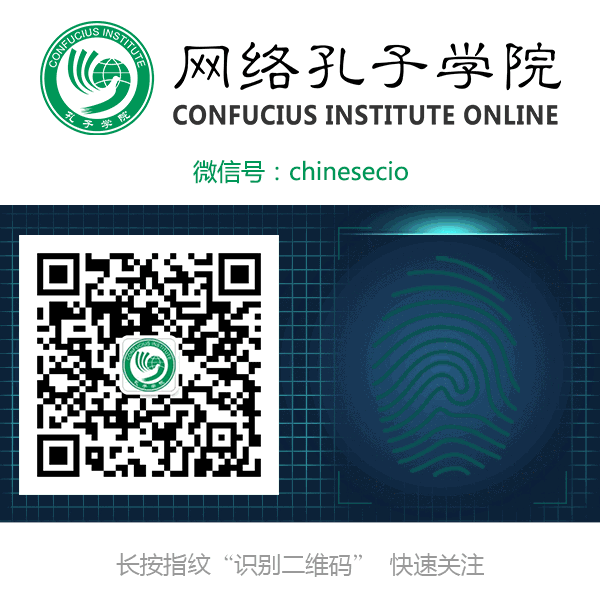

民国大师：做学问，不能靠二手货
 136
136
感谢您关注网络孔子学院官方微信公众号！如果您尚未关注，欢迎点击文章下方的二维码关注我们。
古之学者必有师，我们今天来看看，民国大师上课的经典开场白。
梁启超：兄弟我是没什么学问的
清华国学四大导师之一的梁启超，上课的第一句话是：“兄弟我是没什么学问的。”然后，稍微顿了顿，等大家的议论声小了点，眼睛往天花板上看着，又慢悠悠地补充一句：“兄弟我还是有些学问的。”头一句话谦虚得很，后一句话又极自负，他用的是先抑后扬法。
梁启超：战士死于沙场，学者死于讲坛。梁启超还说过：“吾爱孔子，吾更爱真理。”
1929年，梁启超身体状况渐趋恶化，学生谢国桢和萧龙友劝他停止工作，多多休息。梁说：“战士死于沙场，学者死于讲坛。”不久不治而逝。1982年，谢国桢因病住院，犹坚持看书不已，萧龙友的儿子萧璋去看他，劝他养病期间不要看书，注意休息。谢说：“战士死于沙场，学者死于讲坛，师训不可违！”
西南联大中文系教授刘文典与梁启超的开场白有同工异曲之妙，他是著名《庄子》研究专家，学问大，脾气也大，他上课的第一句话是：“《庄子》嘿，我是不懂的喽，也没有人懂。”其自负由此可见一斑。
沈从文：你们睡觉可以，不要打呼噜
沈从文的小说写得好，在世界上都有影响，差一点得诺贝尔奖，可他的授课技巧却很一般。他也颇有自知之明，一开头就会说，“我的课讲得不精彩，你们要睡觉，我不反对，但请不要打呼噜，以免影响别人。”这么很谦虚地一说，反倒赢得满堂彩。
他的学生汪曾祺曾评价说，沈先生的课，“毫无系统”，“湘西口音很重，声音又低，有些学生听了一堂课，往往觉得不知道听了一些什么”。听他的课，要会“举一隅而三隅反”才行。
启功：在下所讲，全是胡言
启功先生的开场白也很有意思。他是个幽默风趣的人，平时爱开玩笑，上课也不例外，他的第一句话常常是：“本人是满族，过去叫胡人，因此在下所讲，全是胡言。”引起笑声一片。
他的老本家、著名作家、翻译家胡愈之先生，也偶尔到大学客串讲课，开场白就说：“我姓胡，虽然写过一些书，但都是胡写；出版过不少书，那是胡出；至于翻译的外国书，更是胡翻。”在看似轻松的玩笑中，介绍了自己的成就和职业，十分巧妙而贴切。
辜鸿铭：割心里的小辫子难
民国奇人辜鸿铭，学贯中西，名扬四海，自称是“生在南洋，学在西洋，婚在东洋，仕在北洋”，被外国人称为“到北京可以不看故宫，不可不看辜鸿铭”。他在辛亥革命后拒剪辫子，拖着一根焦黄的小辫给学生上课，自然是笑声一片，他也习以为常了，待大家笑得差不多了，他才慢吞吞地说：“我头上的小辫子，只要一剪刀就能解决问题，可要割掉你们心里的小辫子，那就难了。”顿时全场肃然，再听他讲课，如行云流水，似天花乱坠，果然有学问，果然名不虚传。
架子最大的开场白，则非章太炎先生莫属。他的学问很大，想听他上课的人太多，无法满足要求，于是干脆上一次大课。他来上课，五六个弟子陪同，有马幼渔、钱玄同、刘半农等，都是一时俊杰，大师级人物。老头国语不好，由刘半农任翻译，钱玄同写板书，马幼渔倒茶水，可谓盛况空前。老头也不客气，开口就说：“你们来听我上课是你们的幸运，当然也是我的幸运。”(太行公：此段最妙！)
幸亏有后一句铺垫，要光听前一句，那可真狂到天上去了，不过，老头的学问也真不是吹的，满腹经纶，学富五车，他有资格说这个话。
陈寅恪：我的徒弟都要有自由思想、独立精神
陈寅恪执教于中山大学时，讲课时校内教授旁听者常多于学生，陈因此有“教授之教授”的称谓。
陈寅恪说：“我侪虽事学问，而决不可倚学问以谋生，道德尤不济饥寒。要当于学问道德之外，另谋求生之地，经商最妙。”还说：没有自由思想，没有独立精神，即不能发扬真理，即不能研究学术。一切都是小事，唯此是大事。
2111
陈寅恪每次讲课，开宗明义就说：“前人讲过的，我不讲；近人讲过的，我不讲；我自己讲过的，我不讲。现在只讲未曾有人讲过的。”
顾颉刚：学问上要小题大做
一次习作，学生引用《资治通鉴》。顾颉刚说：“引用古书资料，要用原始书，《资治通鉴》是二手货，不足取信于人。”又一次，学生粗心大意，写错字，老师骂他：“要细心，一个字都不可轻轻放过。”
再一次，学生出大题目要写作，这次老师骂他更狠：“你的毛病好出大题。要知道大题目费大功夫，不易做得充实；小题目可以做得充实有力，无懈可击。某些事，可以大题小作，在学问上则要小题大做。”
古直：做学问，不能靠二手货
古直在庐山东林寺设帐收徒，杜宣等人前去听课。古直问他带了什么书，杜说只带了一部《辞源》，古直勃然大怒说：“怎么我的学生用《辞源》？”杜宣说：“我不认识的字，不查《辞源》查什么？”古直更加怒了，大声地说：“怎么，我的学生查《辞源》？”后来古直缓和下来，才说：“做学问，不能靠二手货，不懂的字，要查《说文》，查《尔雅》，查《水经》。要查这个字的第一次出现的地方，这样才可靠。《辞源》这一类书，是二手货。我们做学问要有穷根究底的精神才行。”
黄侃：只要你不认为我有辱门墙，我就执弟子礼
章太炎、刘师培、黄侃三人常在一起切磋学问。有一次，刘师培感叹自己生平没有资质优秀的弟子堪当传人，黄侃即朗声问道：“我来做你的关门弟子如何？”刘师培以为黄侃只是开玩笑，便说：“你自有名师，岂能相屈？”黄侃正色相告：“只要你不认为我有辱门墙，我就执弟子礼。”第二天，黄侃果然用红纸封了十块大洋，前往刘家磕头拜师。有人认为黄的学问更胜于刘，不必自轻身份，黄说：“《三礼》为刘氏家学，非如此不能继承绝学，此所谓道之所存，师之所存。”黄侃只比刘师培小两岁。
顾随：自觉，觉人；自利，利他；自渡，渡人
叶嘉莹的老师顾随每次步上讲台，常是先拈举一个他当时有所感发的话头，然后就此而引申发挥，有时层层深入，可以接连讲授好几小时甚至好几周而不止。有一次先生来上课，步上讲台后便转身在黑板上写了三行字：“自觉，觉人；自利，利他；自渡，渡人。”
先生首先阐明的，就是诗歌之主要作用在于使人感动，所以写诗之人便首先须要有推己及人与推己及物之心。伟大的诗人必须有将小我化而为大我之精神，而自我扩大之途径则有二端：一则是对广大的人世的关怀，另一则是对大自然的融入。
“大学之道，在明明德，在亲民，在止于至善。”现代教育的关键，同样利在大学，利在大学之人格校长，利在传道，利在为学，利在博通，利在独立，利在自由。
来源：中国汉字听写大会
